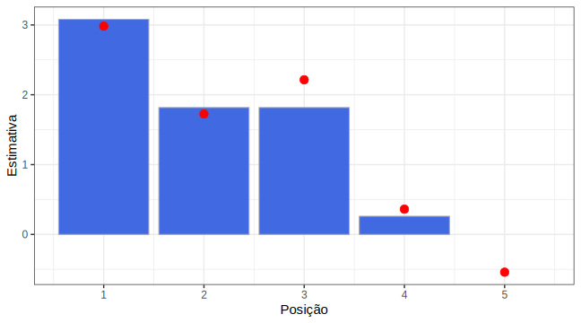

4.8 Mínimos quadrados com restrições lineares
A característica mais importante de um modelo estatístico é a sua flexibilidade. Esse termo pode ser entendido de várias formas, mas neste texto vamos considerar que um modelo é flexível se ele explica de forma coerente uma ampla gama de fenômenos reais.
Pensando assim, a regressão linear pode ser considerada um modelo flexível, já que muitas relações funcionais cotidianas são do tipo \(y = \beta x\). É justamente por causa dessa flexibilidade que a boa e velha regressão de mínimos quadrados é tão usada, até mesmo aonde não deveria. O seu uso é tão indiscriminado que uma vez, em aula, um professor extraordinariamente admirável me disse que “90% dos problemas do mundo podem ser resolvidos com uma regressão linear”.
Sendo bastante honesto, é provável que o meu professor esteja certo, mas este texto não é sobre isso. Este é um post sobre o que fazer quando a regressão linear simples não basta. No que segue, vamos discutir uma pequena (e poderosa) extensão do modelo de regressão linear simples, mas antes de prosseguir para o problema propriamente dito (e sua implementação em R), vamos discutir da teoria que existe por trás dele.
4.8.1 Regressão linear é programação quadrática
Embora seja pouco enfatizado nos bacharelados de estatística, uma regressão linear pode ser formulada como um problema de programação quadrática. Entrando nos detalhes, essa afirmação deve-se a dois fatos:
- Existe uma teoria, que chama-se programação quadrática, que soluciona problemas da forma
\[\min_x \Big(\frac{1}{2}x' Q x + c' x\Big),\]
onde \(x \in \mathbb{R}^p\) e \(Q\) e \(c\) tem dimensões que fazem a conta acima ter sentido. A teoria ocupa-se desenvolvendo algoritmos exatos e aproximados para obter soluções desses problemas, inclusive com generalizações:
\[\min_x \Big(\frac{1}{2}x' Q x + c' x\Big), \text{ sujeito a }Ax \geq 0.\]
- Uma regressão linear consiste em resolver
\[\min_\beta (Y - \beta X)'(Y-\beta X),\]
que, com um pouco de álgebra, é equivalente à
\[ \min_\beta (-2Y'X\beta + \beta'X'X\beta).\]
Logo, tomando \(Q = 2X'X\) e \(c = \frac{1}{2}X'Y\) tem-se que esse é um problema de programação quadrática, que por sua vez é um problema convexo e que, segundo a teoria, tem uma única solução no ponto \(\beta = (X'X)^{-1}X'Y\).
4.8.2 Uma regressão linear simples mais flexível
Talvez o jeito mais simples de flexibilizar uma regressão linear no sentido mencionado no começo desse texto é restringir os seus parâmetros. Em muitos contextos, esse é o único jeito de colocar conhecimentos prévios na modelagem2.
Um caso bastante emblemático aparece nas curvas de crédito divulgadas pela ANBIMA3. Lá, ajusta-se um conjunto de curvas que depende de 6 parâmetros e cada curva representa uma classificação de risco (que nem aquela em que o Brasil pode tomar downgrade4). Como os níveis de risco estão ordenados, é natural exigir que também exista uma ordenação entre as curvas. Sem entrar em detalhes, a ideia pode ser expressa assim:
\[\beta_{AAA} < \beta_{AA} < \beta_{A} < \beta_{BBB} < ...\]
O que é que isso tem a ver com programação quadrática? A resposta é que a inequação acima pode ser escrita como \(A\beta \geq 0\), de tal forma já existe uma teoria para resolver uma regressão linear simples com restrições desse tipo! Basta que ela seja vista como um problema de programação quadrática.
4.8.3 O pacote quadprog
Existe um pacote de R para quase tudo, então, como não poderia deixar de ser, existe um pacote em R para resolver problemas do tipo:
\[\min_x \Big(\frac{1}{2}x' Q x + c' x\Big), \text{ sujeito a }Ax \geq 0.\]
Para ilustrar o seu uso, vamos considerar um exemplo. Vamos simular um conjunto de dados em que \(\beta_5 = 0.31, \beta_4 = 0.43, \beta_3 = 1.31, \beta_2 = 2.19, \beta_1 = 2.29\) são os valores reais que precisamos estimar, considere que vale
\[Y \approx \beta_1X_1 + \beta_2X_2+\beta_3X_3+\beta_4X_4+\beta_5X_5\]
e que o erro de regressão tem distribuição normal.
Se soubermos antecipadamente que valem as seguintes afirmações
\[ \beta_1,\beta_2,\beta_3,\beta_4,\beta_5 > 0 \text{ e } \beta_1 > \beta_2 > \beta_3 > \beta_4 > \beta_5,\]
a minimização de \((Y-\beta X)'(Y-\beta X)\) pode ser resolvida usando a função solve.QP. Tudo que precisamos fazer é escrever o conjunto de inequações na forma \(A\beta \geq 0\). Mas isso é bem fácil! Basta notar que as restrições são equivalentes à
\[ \left(\begin{array}{cccc} 1 & 0 & 0 & 0 & 0 \\ 0 & 1 & 0 & 0 & 0 \\ 0 & 0 & 1 & 0 & 0 \\ 0 & 0 & 0 & 1 & 0 \\ 0 & 0 & 0 & 0 & 1 \\ 1 & -1 & 0 & 0 & 0 \\ 0 & 1 & -1 & 0 & 0 \\ 0 & 0 & 1 & -1 & 0 \\ 0 & 0 & 0 & 1 & -1 \\ \end{array}\right) \times \left(\begin{array}{c}\beta_1 \\ \beta_2 \\ \beta_3 \\ \beta_4 \\ \beta_5 \end{array}\right) \geq 0.\]
Dessa forma, o problema está prontinho pra passar no moedor de carne, com uma última ressalva. O problema resolvido no solve.QP é
\[\min_x \Big(\frac{1}{2}x' Q x + c' x\Big), \text{ sujeito a }A'x \geq 0,\]
então vamos ter que tomar o cuidado de passar as nossas restrições através do transposto da matriz que obtivemos acima. Isso resultará na matriz \(A\).
Para checar como valeu a pena todo esse esforço, dá uma olhada na diferença entre as estimativas! Os pontinhos vermelhos são as estimativas do modelo irrestrito, enquanto as barras são as estimativas do modelo com restrições.

4.8.4 Conclusões
- Regressão linear simples é um problema de programação quadrática.
- Algumas restrições interessantes podem ser escritas na forma \(B\beta \geq 0\).
- Programação quadrática resolve regressão linear simples com restrições lineares.
- Se em algum dia você topar com um bicho desses, o
quadprogpode resolver o problema pra você.
A menos que você seja
uma pessoa razoávelbayesiano.↩http://www.anbima.com.br/data/files/05/43/3E/84/E12D7510E7FCF875262C16A8/metodologia-curvas_20credito_20131104_v2_1_.pdf↩
http://economia.estadao.com.br/noticias/geral,agravamento-da-crise-politica-eleva-risco-de-rebaixamento-do-brasil-diz-sep,70001824274↩